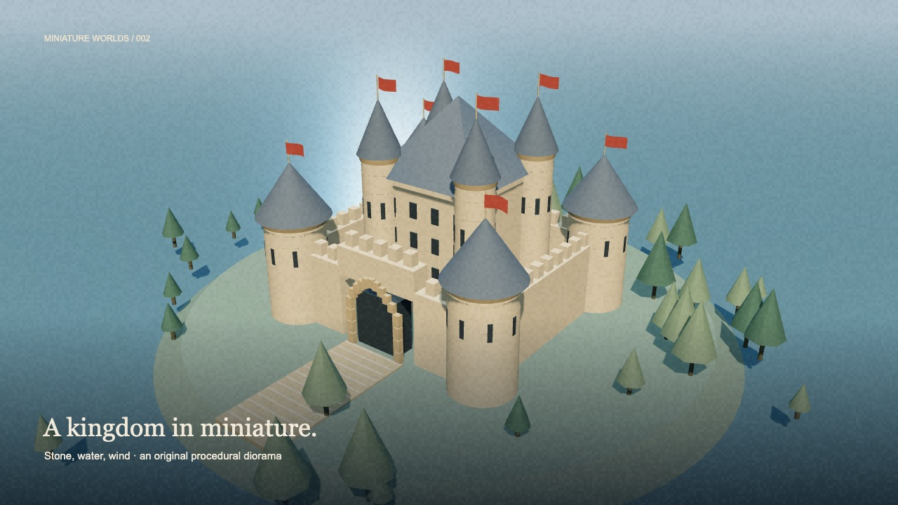
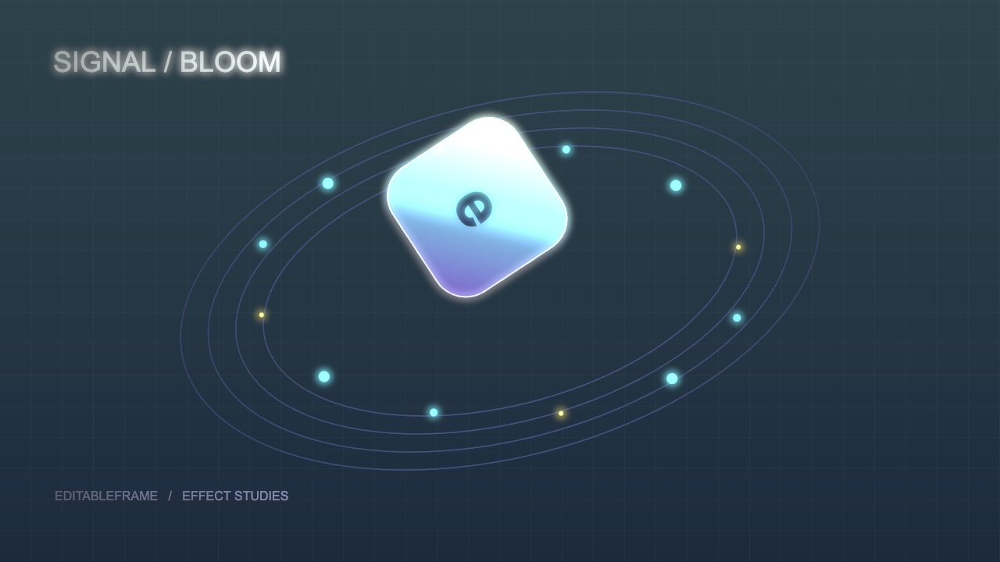
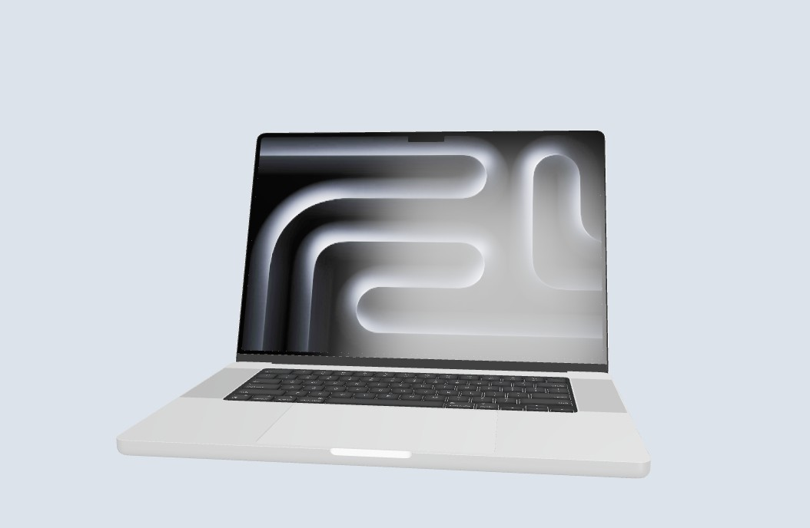

An open canvas for video made with code. Bring your favorite renderer, expose the details that matter, and let people and agents refine them through reversible edits.
Saved edits, revision checks, embedded MP4, audio mixing and ProRes 4444 alpha. Trusted local-code runtime.
node bin/editableframe.mjs init my-film --media
Read the beta contract and try it →

11 editable films: science, paper, ink, isometric systems and procedural 3D worlds.

24 working effects, six composed looks and a candid map of 306 implementation routes.

55-device catalog, real studio HDR lighting and editable screen bindings. Five models included in a source checkout.
One shared skill and a model-neutral command interface.
node bin/editableframe.mjs init my-clip
Creative code stays open. Schemas expose editable handles; they do not define everything a clip can become.